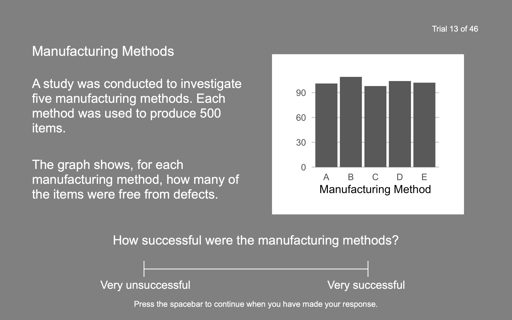
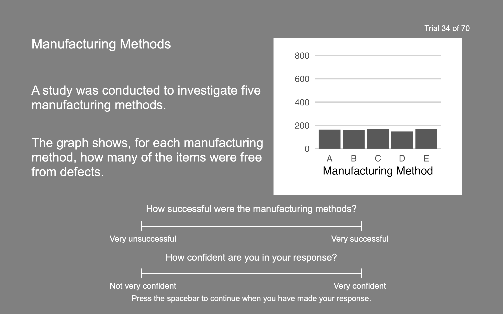

Axis Limits and Denominator Information Influence Magnitude Ratings in Bar Charts
Abstract
Gauging a number’s magnitude can be difficult without sufficient background knowledge. For certain types of data, awareness of denominator information can facilitate interpretation. Default axis upper limits (e.g., in ggplot2) are typically based on the highest plotted value, but axis extended beyond plotted values can act as a graphical cue to a denominator value. In two experiments (combined N = 350), we explore the influence of default and extended axes on interpretations of the magnitude of plotted values in bar charts. We also investigate the influence of accompanying denominator information on participants’ assessments. We observe that values plotted using default axes were rated as higher, compared to values plotted using extended axes. The absence of denominator information amplifies the effect of axis limits on interpretation. This demonstrates that axes which incorporate denominator values influence impressions of presented data. Whereas prior work has often focused judgements of the differences between values, this work contributes to an understanding of the cognitive mechanisms involved in interpreting the magnitude of the values themselves. We also discuss implications for effective design, which involve considering both axis limits and accompanying information.
Introduction
The question ‘Is it a big number?’ is often raised on the BBC radio programme More or Less when probing eye-catching statistics. A figure of several million pounds may initially seem large, but may represent a small proportion of total government spending. Awareness of a denominator value can influence judgement of a number’s magnitude. In data visualisation, this contextual information can be displayed by extending an axis to accommodate the denominator value. However, this approach is infrequently used, since typical default axis settings are based on plotted data only. In this study, we investigate how these axis limits affect interpretations of how large or small plotted values are.
Overview
Across two experiments, we investigate the interpretation of magnitudes in bar charts. We plotted fictitious datasets which contained multiple observations, all with the same denominator values. In the first experiment, we displayed charts with default axes which terminated just above plotted values, or axes which extended to the denominator value specified in accompanying text. Participants rated values’ magnitudes as higher when default axes were used, compared to extended axes. In the second experiment, we manipulated the axis range, as before, and also the presence of the denominator information in accompanying text. The difference in magnitude ratings between the two axis settings was greater when denominator information not supplied. This indicates that this information influences the biasing effect of a chart’s appearance.
Experiment 1
Introduction
This experiment investigates the influence of axis limits on interpretations of plotted values’ magnitude. Participants viewed bar charts with default axes, or axes which extended to a denominator value well above the bars. Comparing participants’ interpretations captures the influence of displaying the same data with and without numerical context.
Method
Materials
We developed 40 scenarios about fictitious studies. Each study evaluated a specific outcome across five categories (e.g., the number of items produced without defects, for five manufacturing methods). The denominator (e.g., total number of items produced) was identical for each category.
We generated bar charts in R (R Core Team 2022) using {ggplot2} (version 4.1.2), {tidyverse} (version 1.3.1) and {ggh4x} (version 0.2.1). The two versions of each chart displayed the same five values, but employed different y-axis limits. Denominator values (400, 500, or 600) were used to generate datasets: data were sampled from normal distribution with a mean equal to either 20% or 40% of a given denominator value, and a standard deviation equal to 1% of the denominator value.
For charts with extended axes, the denominator value y-axis upper limit. The other charts used a y-axis upper limit was dictated by ggplot2’s default axis settings. These settings automatically identify a set of convenient breaks for each dataset, then slightly extend the plot area, adding an additional 5% of the axis range. In both conditions, a smaller expansion factor of 1% was applied to the lower axis limit, contrary to the default settings, in order to eliminate visible space below the 0 baseline. Figure 1 shows example charts for both conditions.
For the majority of datasets generated, the default settings produced charts where the highest gridline did not exceed the tallest bar. For consistency, when the opposite situation occurred, we used a different random seed to generate an alternative dataset for both conditions. 10% of datasets used were generated using this method.
In experimental trials (32 total), plotted values consisted of relatively small proportions of the dataset’s denominator value (roughly 20% or 40%). To introduce variety and encourage attention, eight filler trials showed plotted values which were roughly 90% of the corresponding denominator value. Denominators for filler trials were selected so that numerical labels on the y-axis would approximately resembled either extended or default experimental trials.
We included six attention check trials to assess participants’ engagement with the task. These trials were similar to experimental and filler trials, comprising of text, a bar chart, question and visual analogue scale. However, participants were instructed to ignore the bar chart and provide a specified response on the visual analogue scale.
Design
We employed a within-participants design: participants viewed 16 different charts in each of the two conditions (32 experimental trials total). The correspondence between scenarios and conditions was counterbalanced using two lists. However, all participants saw the same versions of the eight filler items and six attention check items. There were a total of 46 trials, which were presented in a random order.
Participants
Participants were recruited using Prolific.co. The experiment was advertised to fluent English speakers with normal-or-corrected to normal vision, who had previously participated in at least 100 studies on the site.
Data were returned by 157 participants. Per pre-registered exclusion criteria, seven participants’ submissions were rejected because they answered more than one of six attention check questions incorrectly. Participants whose submissions were accepted received £3.50.
The final sample consisted of 150 participants (57.33% male, 39.33% female, 3.33% non-binary). Mean age was 33.18 years (SD = 12.93). The mean data visualisation literacy score was 21.35 (SD = 4.73), out of a maximum of 30.
This experiment was approved by the University of Manchester’s Division of Neuroscience and Experimental Psychology Ethics Committee (ethics code: 2022-11115-24245).
Procedure
We programmed the experiment using PsychoPy (version 2022.1.4, (Peirce et al. 2019)). Participants were instructed to carry out the experiment using a laptop or desktop computer (not a mobile phone or tablet). After providing informed consent, participants completed a demographic questionnaire and Garcia-Retamero et al.’s (Garcia-Retamero et al. 2016) five-item subjective data visualisation literacy scale.
Participants were asked to imagine they were a researcher tasked with determining the outcome of experiments and surveys. They were instructed, to make an overall assessment of all data presented in a graph after studying the text, graph, and question. All questions asked about plotted values’ magnitudes (e.g., ‘How successful were the manufacturing methods?’), with participants responding on visual analogue scales with anchors at the extremes (e.g., ‘very unsuccessful’, ‘very successful’). Figure 2 shows an example trial.

Participants were permitted to move the response marker as many times as they liked before proceeding to the next trial, but could not return to previous trials. The response scale’s granularity was altered for each attention check item, such that participants could only respond at the extremes or the middle of the scale. Finally, participants were informed that all data presented was fictitious and were given the option to provide comments on the experiment and describe any strategies used. Average completion time was 19.2 minutes.
Analysis
We conducted analysis using R (R Core Team 2022) (version 4.2.1). Linear mixed models were built using {lme4} (Bates et al. 2015). Each model was based on a maximal model with by-participant and by-item random effects (Barr et al. 2013), and {buildmer} (Voeten 2022) was used to identify the final random effects structure, ensuring convergence and removing terms not significantly contributing to explaining variance.
Magnitude Ratings
Figure 3 shows the distribution of ratings for charts with default axes and extended axes.

Linear mixed-effects modelling revealed that participants awarded higher ratings to charts with default axes, compared to charts with extended axes: F(1, 152.54) = 44.90, p < .001, partial \(\eta^2\) = 0.23.
This model employed a maximal random effects structure, capturing the baseline responses (intercepts) and differences between the two axis settings (slopes) separately for each individual participant and each individual item.
Magnitude Ratings and Data Visualisation Literacy
Accounting for differences in data visualisation literacy did not change the significant effect of axis limits: F(1, 152.57) = 44.95, p < .001, partial \(\eta^2\) = 0.23.
Discussion
This experiment explored the consequences of including a graphical cue to a denominator value using bar charts’ axes. We observed that plotted values’ magnitudes were interpreted as smaller when a default axis limit was used, compared to an axis limit equal to the dataset’s denominator value. Therefore, assessments of data were biased by the presence or absence of numerical context in bar charts.
Denominator information informs magnitude judgements. In bar charts with extended axes, denominator information was available through the accompanying text and through axes. Comparison with bar charts employing default axes, where denominator information was only available through text, reveals the contribution of the graphical cue to the denominator value. Inconsistency in the differences between conditions illustrates variation in interpretation. The relative similarity of lower magnitude ratings across conditions indicates some attention to denominator information in the absence of a graphical cue. However, some extreme high magnitude ratings suggest that the appearance of tall bars carried the implication of large values. These ratings may indicate a failure to account for denominator information in the absence of a graphical cue. We investigate the role of denominator information further in Experiment 2.
Experiment 2
Introduction
Experiment 1 found differences in interpretations of data presented using different axes limits. Overall, plotted data were associated with lower magnitudes when presenting using axes which extended to a denominator value. Compared to bar charts with extended axes, charts with no graphical cue to a denominator value elicited a wider variety of responses. This variety appears to reflect differences in how the denominator information supplied in accompanying text used in magnitude judgements. This raises questions about how text including denominator information influences the interpretation of different chart designs.
By manipulating the presence of denominator information in accompanying text, in addition to manipulating axis limits, we investigate how these textual and graphical cues inform assessments of data. This allows us to understand how different chart designs are interpreted with and without additional numerical context. This 2x2 design also allows us to replicate the findings from Experiment 1 and explore whether ratings in the absence of denominator information correspond to the previously observed pattern of extreme ratings.
This follow-up experiment requires minor adaptations to materials and procedure. First, there is a risk that highly ambiguous trials without denominator information supplied in text will elicit unreliable random ratings. Therefore, we collect additional confidence ratings to directly indexing this aspect of participants’ evaluations. This provides a more comprehensive view of participants’ cognitive states and interpretations. Second, when denominators are not supplied in text, participants may use denominator values supplied in previous trials to inform their judgements. A limited range of denominators (as in Experiment 1) would artificially diminish uncertainty regarding possible values, inhibiting authentic, spontaneous judgements. Therefore, we expand the range of denominators values in Experiment 2. Third, increasing the number of fillers (which depict relatively high magnitudes) to match the number of experimental items (which depict relatively low magnitudes) will avoid priming effects by ensuring high and low magnitudes seem equally plausible.
Method
Materials
We generated bar charts in R using {ggplot2} (version 4.2.1), {tidyverse} (version 1.3.2) and {ggh4x} (version 0.2.3).
Bar charts were generated using the same method as in Experiment 1. We used the same scenarios from Experiment 1, and generated 24 new scenarios for use as additional filler items, thus employing 32 experimental items and 32 filler items. To increase variation across datasets, we employed a wider range of denominators (200, 400, 600, and 800), therefore the plotted values differed from Experiment 1.
We added the word ‘surveyed’ or ‘assessed’ to accompanying text for seven items where the absence of a denominator may have implied that data were collected for the entire population under study. For example, where the study concerned data collected in five towns, the final sentence read ‘The graph shows, for each town, how many people surveyed used public transport regularly’, to avoid the implication that the denominator was equal to an entire town’s population. This ensured that the inclusion of denominator values was equally informative across all scenarios.
16% of datasets used were re-generated to ensure that highest gridline of a default axis did not exceed the highest plotted value.
Design
We employed a within-participants 2x2 Latin-squared design with two factors: Axis Limit (default vs. extended) and denominator presence (present vs. absent). Participants viewed 8 different charts for each combination of conditions (32 experimental trials total). The correspondence between scenarios and conditions was counterbalanced using four lists. However, all participants saw the same versions of the 32 filler items and six attention check items.
Participants
Participants were recruited using Prolific.co, using the same inclusion criteria as Experiment 1. Additionally, the experiment was not advertised to individuals who completed Experiment 1.
Data were returned by 208 participants. Per pre-registered exclusion criteria, eight participants’ submissions were rejected because they answered more than one of six attention check questions incorrectly. Participants whose submissions were accepted received £5.00.
The final sample consisted of 200 participants (60.00% male, 38.00% female, 1.00% non-binary, 0.50% other, 0.50% prefer not say). Mean age was 33.17 years (SD = 10.34)1. The mean data visualisation literacy score was 21.72 (SD = 4.84), out of a maximum of 30.
This experiment was approved by the University of Manchester’s Division of Neuroscience and Experimental Psychology Ethics Committee (ethics code: 2023-11115-28428).
Procedure
The procedure was identical to Experiment 1, except for the addition of a confidence rating, where participants were asked ‘How confident are you in your response?’. The anchors on the response scale were ‘Not very confident’ and ‘Very confident’. Figure 4 shows an example trial.
For attention check items, participants were asked to provide a specific response on the magnitude rating scale, and a random response on the confidence rating scale.
Average completion time was 29.3 minutes.

Analysis
Magnitude Ratings
Figure 5 shows the distribution of magnitude ratings for charts with default axes and extended axes, where denominators were absent from text, and where they were present.

A mixed effects model revealed that charts with default axes elicited higher ratings than chart with extended axes (F(1, 198.22) = 311.45, p < .001, partial \(\eta^2\) = 0.61) and charts not accompanied by a denominator in text elicited higher ratings than those accompanied by a denominator (F(1, 82.23) = 380.50, p < .001, partial \(\eta^2\) = 0.82).
Crucially, there was also a significant interaction between Axis Limit and denominator presence: F(1, 5,741.16) = 1,540.86, p < .001, partial \(\eta^2\) = 0.21. Figure 6 plots this interaction.
Pairwise comparisons produced using {emmeans} (Lenth 2021) revealed that charts with extended and default axes were rated differently when the denominator was present, replicating the effect from Experiment 1 (z = -9.19, p < .001), and also when the denominator was absent (z = -25.35, p < .001). Therefore, the interaction indicates that the magnitude of influence exerted by a bar chart’s axis varied according to whether the denominator was present or absent.
This model employed by-participant and by-item random effects. For each participant, there were random intercepts, plus random slopes for axis settings and denominator presence. For each item, there were random intercepts, plus random slopes for denominator presence.

Magnitude Ratings and Data Visualisation Literacy
Accounting for differences in data visualisation literacy did not change the significant interaction: F(1, 5,741.14) = 1,540.85, p < .001, partial \(\eta^2\) = 0.21., the main effect of axis limit (F(1, 198.24) = 311.46, p < .001, partial \(\eta^2\) = 0.61) or the main effect of denominator presence (F(1, 82.29) = 380.60, p < .001, partial \(\eta^2\) = 0.82).
Confidence Ratings

Figure 7 shows the distribution of confidence ratings for charts with default axes and extended axes, where denominators were absent from text, and where they were present.

A mixed effects model revealed was a main effect associated with axis limits (F(1, 199.00) = 5.97, p = .015, partial \(\eta^2\) = 0.03), a main effect associated with denominator presence (F(1, 198.99) = 184.93, p < .001, partial \(\eta^2\) = 0.48) and an interaction F(1, 5,799.00) = 27.74, p < .001, partial \(\eta^2\) = 0.00. This interaction consisted of a difference between extended and default charts when the denominator was absent from text (z = -4.69, p < .001), but no difference between charts the denominator was present (z = 0.42, p = .988). However, it is clear from Figure 8, as well as the partial \(\eta^2\) values, that the effect sizes associated with axis limits and the interaction are trivial.
Confidence Ratings and Data Visualisation Literacy
Accounting for differences in data visualisation literacy did not change the pattern of results. There was a main effect associated with axis limits (F(1, 199.01) = 5.97, p = .015, partial \(\eta^2\) = 0.03) and a main effect associated with denominator presence (F(1, 198.99) = 184.93, p < .001, partial \(\eta^2\) = 0.48) and an interaction F(1, 5,798.99) = 27.74, p < .001, partial \(\eta^2\) = 0.00.
Discussion
This experiment manipulated bar charts’ axis limits, and the presence of denominator values in accompanying text. The results demonstrate that values presented in charts with default axis limits are associated with higher magnitudes, than charts with extended axes, in both the presence and absence of denominator information. However, the absence of denominator information amplifies this bias. These results also suggest that extreme high magnitude ratings for default charts in the presence of a denominator value may be driven by a failure to incorporate that value into reasoning. Finally, confidence in judgements is reliably affected by the inclusion of denominator information in text.
General Discussion
Axis limits can be easily manipulated in common data visualisation software, in order to include a visual cue to denominator information. However, these default are based on plotted data only, so often omit denominator information. We demonstrate that plotted values’ magnitudes were interpreted as smaller when a bar chart’s axes were extended to the denominator value, rather than the default settings. Unsurprisingly, the influence of axis limits was particularly large when no denominator information was included in the text accompaning a chart. This provides insight into the cognitive process involved in magnitude judgements, indicating that denominator information is an important aspect in interpreting bar charts.
In Experiment 1, we identified a framing effect, wherein charts with axes that accomodated a denominator value elicited smaller magnitude judgements compared to chart with default axes. In both conditions, the denominator was explicitly presented in the text. Additionally, some extreme responses in the default condition appeared to represent a disregard for denominator information. Given the apparent importance of this information, we conducted another experiment in order to examine the denominator’s role in the cognitive processing of magnitude. We examined how interpretations were affected by the absence of denominator information, thus capturing how this information was incorporated differently across chart designs.
Experiment 2 makes several contributions. First, it replicated the main effect from Experiment 1. That is, we observed a propensity to interpret magnitudes as smaller when values were shown with an extended axis, rather than a default axis. Second, we illustrate the impact of including a denominator information in accompanying text. This cue affects viewers’ interpretations differently depending on whether a chart’s axis also incorporates the same value. Without denominator information in text, the magnitude of values plotted using default axes can be totally ambiguous. Accordingly, drastically higher ratings in the absence of denominator information illustrate the denominator’s role in reducing ambiguity. Interpretation of values plotted using extended axes was affected to a lesser extent by the denominator’s absence. Thus, the impact of a bar chart’s axis is greater when not accompanied by a denominator. This suggests axis limits facilitate recognition of denominator information when interpreting magnitudes.
Third, Experiment 2 replicated the pattern of responses observed in Experiment 1 for charts with default axes and accompanying denominator information. This pattern consists of a small number of higher magnitude ratings, in contrast to the general tendency for lower magnitude ratings. Figure 5 reveals a close resemblance between the distribution of these higher ratings and the overall distribution of ratings for default charts without accompanying denominator information. This suggests that these extreme ratings may share a cause. Unusually high responses in the presence of denominator information likely result from failure to account for the denominator and a subsequent reliance on the chart’s appearance. The analogous reponses to charts without accompanying denominators (Experiment 2) can be considered an experimentally-induced instance of the same cognitive process.
Fourth, additional ratings collected in Experiment 2 provide insight into participants’ confidence. Although analysis of these ratings indicated a main effect of axis limits and an interaction between denominator information and axis limits, the minuscule effect sizes casts doubt over the practical significance of these effects. In spite of this, absence of a denominator clearly lowered confidence. This suggests that participants were hesitant to form magnitude judgements based solely on a bar chart’s appearance. Inclusion of a denominator value in text was desired regardless of graphical cues to context.
Relationship to Prior Work
We contribute to a large body of evidence regarding biases in the interpretation of numerical information, specifically framing effects (Tversky and Kahneman 1981). Our results are consistent with research demonstrating that manipulating a bar chart’s axis limit influences interpretation of plotted values (Garcia-Retamero and Galesic 2010; Okan, Stone, and Bruine De Bruin 2018). Furthermore, Okan, Stone, and Bruine De Bruin (2018) found that participants’ perceptions of risk were influenced more by bar charts’ axis limits when labels containing numerator and denominator information were excluded. Similarly, we observed that interpretations of magnitude were influenced more by bar charts’ axis limits when denominator values were omitted from accompanying text.
A previous study exploring interpretation of magnitude in bar charts observed different responses according to whether stacked bars or blank space conveyed alternative outcomes (Stone et al. 2017). We demonstrate the manipulating the amount of blank space above bars can elicit different magnitude judgements, without plotting alternative outcomes explicitly.
Earlier work investigating (in)consistency in the formats used to display numerators and denominators is also relevant. Stone et al. (2015) found that displaying a value using icons, accompanied by a denominator in text, increased impressions of that value’s magnitude, compared to when both the value and denominator were presented in text. We too found higher ratings when values displayed using bars were only accompanied by a denominator in text, compared to when a corresponding graphical cue to the denominator value was also present.
According to Fuzzy Trace Theory, different interpretations can arise due to different gist-level representations, despite accurate comprehension of presented values (Reyna 2008). Therefore, access to denominator information in accompany text did not prevent our chart designs influencing judgements. Encoding of gist is reported to be influenced by the appearance graphical elements (Reyna 2008). This suggests that the taller bars in our default axis conditions were responsible for impressions of greater magnitude, compared to shorter bars in our extended axis conditions. That charts with extended axes elicited lower magnitude ratings is also consistent with Stone et al. (2018) proportional reasoning account, which suggests that part-to-whole displays facilitate processing of a larger numerical context.
Our focus on judgements of values’ magnitudes is noteworthy because the vast majority of related work has explored participants’ judgements of differences between values (Okan et al. 2012, 2020; Okan, Stone, and Bruine De Bruin 2018; Stone et al. 2003, 2018; Garcia-Retamero and Galesic 2010; Yang et al. 2021; Witt 2019; Correll, Bertini, and Franconeri 2020). Responses to questions about values’ magnitudes have often been obscured through inclusion in composite measures (e.g., Okan, Stone, and Bruine De Bruin 2018), or have been collected to assess comprehension, rather than interpretation (e.g., Garcia-Retamero and Galesic 2010). As Stone et al. (2015) discuss, failing to consider interpretations of values’ magnitudes reflects two issues. First, neglecting values’ magnitudes overlooks a relevant aspect of judging numerical information. Second, neglecting participants’ interpretations limits insight into decision-making, which is not simply governed by accurate retrieval of information (see (Reyna 2008)).
Whereas much prior research has been limited to interpretation of risk information (Garcia-Retamero and Galesic 2010; Okan et al. 2012, 2020; Okan, Stone, and Bruine De Bruin 2018; Stone et al. 2003, 2018, 2017, 2015), we demonstrate that biases in interpretation extend to a wide range of non-risk scenarios. This provides confidence that these findings are widely applicable, and using multiple trials per participant enhances statistical power. When generating charts that do not include denominator values, previous experiments (Garcia-Retamero and Galesic 2010; Okan, Stone, and Bruine De Bruin 2018) appear to have employed abritary axis limits. By employing axis limits based on with {ggplot2}’s default settings, our materials reflect common practice, enhancing our experiment’s ecological validity.
We did not find evidence that data visualisation literacy affected our results. This is contrary to the finding that data visualisation literacy predicted the efficacy of using icon arrays to reduce denominator neglect (Okan et al. 2012). However, this is consistent with the finding that the impact of manipulations like ours (axis range, numerical labels) are independent of data visualisation literacy (Okan, Stone, and Bruine De Bruin 2018). This measure may capture whether people have sufficient ability to extract information from a visualisation, rather than predicting the degree to which they will be influenced by subtler design choices (Yang et al. 2021). Numeracy is associated with decreased sensitivity to framing effects (Peters et al. 2006), so this may be a better candidate for understanding individual differences in response to visualisation design.
Implications
When conveying values’ magnitudes, both axis limits and accompanying text warrant consideration from data visualisation designers. A bar chart produced using default settings is not equivalent to a bar chart with an axis that incorporates a denominator value. Extending an axis in this manner increases consistency in judgements and may provide insurance against individuals who fail to account for accompanying denominator information. Similarly, where constraints prevent inclusion of a denominator value in text, an extended axis should facilitate viewers’ recognition of this numerical context. We observed that confidence ratings were consistently high in the absence of a denominator in text, despite use of an extended axis. Explicitly providing denominator values in text, regardless of graphical cues, would promote confidence.
It is also worth considering situations which may accentuate the observed bias. High cognitive load exacerbates the numerosity bias (Pelham, Sumarta, and Myaskovsky 1994), therefore may also interfere with magnitude judgements. Even when denominator information is supplied in text, high cognitive load could prevent this information informing interpretations. This would likely increase reliance on bar charts’ appearances, like in Experiment 2. Additionally, assuming that an audience has knowledge of a dataset’s denominator may increase biases in individuals who are unfamiliar with the topic.
Limitations and Future Work
This work is concerned with visualisations intended to convey plotted values’ magnitudes. However, design considerations will differ when conveying differences between values. In this case, axis ranges should be determined by the magnitude of the differences (Correll, Bertini, and Franconeri 2020; Witt 2019; Yang et al. 2021). Consequently, our recomendations are not relevant for all communicative scenarios. However, maintaining awareness of the implication of plotted values’ magnitudes may help avoid misinterpretation of data, even if this type of judgement is not a primary concern.
Our experiment applies best to controlled scenarios, such as surveys and experiments where all plotted values share the same denominator. These findings may also extend to datasets with unequal denominators, if bars are used to depict proportions or percentages, permitting use of a single meaningful axis limit. However, this design will not be suitable for plotting other types of dataset. We also acknowledge that proportions are not the only factor influencing magnitude judgements: subject matter is also likely to inform assessments. For example, bars clearly depicting one or two hours spent on administrative tasks within a 35-hour work week will still elicit some differences of opinion regarding whether these values are high or low.
All materials were produced using {ggplot2}. Therefore, our conclusions about default axis limits only pertain to bar charts created using this package’s settings, though we expect other visualisation libraries’ default settings to elicit similar responses, due to similarity in their behaviour. For uniformity in our materials, we only employed default charts where the highest gridline was positioned below the highest value, since this was the most common visual arrangement. We did not examine the minority of cases where the highest gridline exceeds the highest value. Whether this influences magnitude judgements could be explored in future experiments. In addition, future work should employ decision-making tasks to quantify the impact of axis limits on applied judgements.
Conclusion
In two experiments, we generated evidence on the effects of default and extended axis limits, illustrating the influential role of denominators in gauging magnitude. We provide insight into the cognitive processes involved in interpreting plotted values’ magnitudes in bar charts and offer recommendations for facilitating judgements. Framing effects demonstrate the power of presentation choices on the interpretation of numbers.
References
Barr, Dale J., Roger Levy, Christoph Scheepers, and Harry J. Tily. 2013. “Random Effects Structure for Confirmatory Hypothesis Testing: Keep It Maximal.” Journal of Memory and Language 68 (3): 255–78. https://doi.org/10.1016/j.jml.2012.11.001.
Bates, Douglas, Martin Mächler, Ben Bolker, and Steve Walker. 2015. “Fitting Linear Mixed-Effects Models Using Lme4.” Journal of Statistical Software 67 (1). https://doi.org/10.18637/jss.v067.i01.
Burson, Katherine A., Richard P. Larrick, and John G. Lynch. 2009. “Six of One, Half Dozen of the Other: Expanding and Contracting Numerical Dimensions Produces Preference Reversals.” Psychological Science 20 (9): 1074–78. https://doi.org/10.1111/j.1467-9280.2009.02394.x.
Correll, Michael, Enrico Bertini, and Steven Franconeri. 2020. “Truncating the Y-Axis: Threat or Menace?” In Proceedings of the 2020 CHI Conference on Human Factors in Computing Systems, 1–12. Honolulu HI USA: ACM. https://doi.org/10.1145/3313831.3376222.
Cosmides, L, and John Tooby. 1996. “Are Humans Good Intuitive Statisticians After All? Rethinking Some Conclusions from the Literature on Judgment Under Uncertainty.” Cognition 58 (1): 1–73. https://doi.org/10.1016/0010-0277(95)00664-8.
Feldman-Stewart, Deb, Michael D. Brundage, and Vladimir Zotov. 2007. “Further Insight into the Perception of Quantitative Information: Judgments of Gist in Treatment Decisions.” Medical Decision Making 27 (1): 34–43. https://doi.org/10.1177/0272989X06297101.
Garcia-Retamero, Rocio, Edward T. Cokely, Saima Ghazal, and Alexander Joeris. 2016. “Measuring Graph Literacy Without a Test: A Brief Subjective Assessment.” Medical Decision Making 36 (7): 854–67. https://doi.org/10.1177/0272989X16655334.
Garcia-Retamero, Rocio, and Mirta Galesic. 2010. “Who Proficts from Visual Aids: Overcoming Challenges in People’s Understanding of Risks.” Social Science & Medicine 70 (7): 1019–25. https://doi.org/10.1016/j.socscimed.2009.11.031.
Lenth, Russell V. 2021. “Emmeans: Estimated Marginal Means, Aka Least-Squares Means.” https://CRAN.R-project.org/package=emmeans.
Levin, Irwin P. 1987. “Associative Effects of Information Framing.” Bulletin of the Psychonomic Society 25 (2): 85–86. https://doi.org/10.3758/BF03330291.
Li, Meng, and Gretchen B. Chapman. 2013. “A Big Fish or a Small Pond? Framing Effects in Percentages.” Organizational Behavior and Human Decision Processes 122 (2): 190–99. https://doi.org/10.1016/j.obhdp.2013.07.003.
Monga, Ashwani, and Rajesh Bagchi. 2012. “Years, Months, and Days Versus 1, 12, and 365: The Influence of Units Versus Numbers.” Journal of Consumer Research 39 (1): 185–98. https://doi.org/10.1086/662039.
Okan, Yasmina, Rocio Garcia-Retamero, Edward T. Cokely, and Antonio Maldonado. 2012. “Individual Differences in Graph Literacy: Overcoming Denominator Neglect in Risk Comprehension.” Journal of Behavioral Decision Making 25 (4): 390–401. https://doi.org/10.1002/bdm.751.
Okan, Yasmina, Eric R. Stone, and Wändi Bruine De Bruin. 2018. “Designing Graphs That Promote Both Risk Understanding and Behavior Change: Graphs Promoting Risk Understanding and Behavior Change.” Risk Analysis 38 (5): 929–46. https://doi.org/10.1111/risa.12895.
Okan, Yasmina, Eric R. Stone, Jonathan Parillo, Wändi Bruine de Bruin, and Andrew M. Parker. 2020. “Probability Size Matters: The Effect of Foreground‐Only Versus Foreground+Background Graphs on Risk Aversion Diminishes with Larger Probabilities.” Risk Analysis 40 (4): 771–88. https://doi.org/10.1111/risa.13431.
Pandey, Anshul Vikram, Katharina Rall, Margaret L. Satterthwaite, Oded Nov, and Enrico Bertini. 2015. “How Deceptive Are Deceptive Visualizations?: An Empirical Analysis of Common Distortion Techniques.” In Proceedings of the 33rd Annual ACM Conference on Human Factors in Computing Systems - CHI ’15, 1469–78. Seoul, Republic of Korea: ACM Press. https://doi.org/10.1145/2702123.2702608.
Peirce, Jonathan, Jeremy R. Gray, Sol Simpson, Michael MacAskill, Richard Höchenberger, Hiroyuki Sogo, Erik Kastman, and Jonas Kristoffer Lindeløv. 2019. “PsychoPy2: Experiments in Behavior Made Easy.” Behavior Research Methods 51 (1): 195–203. https://doi.org/10.3758/s13428-018-01193-y.
Pelham, B. W., T. T. Sumarta, and L. Myaskovsky. 1994. “The Easy Path From Many To Much: The Numerosity Heuristic.” Cognitive Psychology 26 (2): 103–33. https://doi.org/10.1006/cogp.1994.1004.
Peters, Ellen, Daniel Västfjäll, Paul Slovic, C K Mertz, Ketti Mazzocco, and Stephan Dickert. 2006. “Numeracy and Decision Making” 17 (5).
R Core Team. 2022. “R: A Language and Environment for Statistical Computing.” Vienna, Austria: R Foundation for Statistical Computing. https://www.R-project.org/.
Reyna, Valerie F. 2008. “A Theory of Medical Decision Making and Health: Fuzzy Trace Theory.” Medical Decision Making 28 (6): 850–65. https://doi.org/10.1177/0272989X08327066.
Reyna, Valerie F., and Charles J. Brainerd. 2008. “Numeracy, Ratio Bias, and Denominator Neglect in Judgments of Risk and Probability.” Learning and Individual Differences 18 (1): 89–107. https://doi.org/10.1016/j.lindif.2007.03.011.
Sevilla, Julio, Mathew S. Isaac, and Rajesh Bagchi. 2018. “Format Neglect: How the Use of Numerical Versus Percentage Rank Claims Influences Consumer Judgments.” Journal of Marketing 82 (6): 150–64. https://doi.org/10.1177/0022242918805455.
Stone, Eric R., Wändi Bruin, Abigail M. Wilkins, Emily M. Boker, and Jacqueline MacDonald Gibson. 2017. “Designing Graphs to Communicate Risks: Understanding How the Choice of Graphical Format Influences Decision Making.” Risk Analysis 37 (4): 612–28. https://doi.org/10.1111/risa.12660.
Stone, Eric R., Alexis R. Gabard, Aislinn E. Groves, and Isaac M. Lipkus. 2015. “Effects of Numerical Versus Foreground-Only Icon Displays on Understanding of Risk Magnitudes.” Journal of Health Communication 20 (10): 1230–41. https://doi.org/10.1080/10810730.2015.1018594.
Stone, Eric R., Emily C. Reeder, Jonathan Parillo, Cynthia Long, and LeeAnn Walb. 2018. “Salience Versus Proportional Reasoning: Rethinking the Mechanism Behind Graphical Display Effects: Proportional Reasoning.” Journal of Behavioral Decision Making 31 (4): 473–86. https://doi.org/10.1002/bdm.2051.
Stone, Eric R., Winston R. Sieck, Benita E. Bull, J. Frank Yates, Stephanie C. Parks, and Carolyn J. Rush. 2003. “Foreground:background Salience: Explaining the Effects of Graphical Displays on Risk Avoidance.” Organizational Behavior and Human Decision Processes 90 (1): 19–36. https://doi.org/10.1016/S0749-5978(03)00003-7.
Tversky, Amos, and Daniel Kahneman. 1981. “The Framing of Decisions and the Psychology of Choice.” Science 211 (4481): 453–58. https://doi.org/10.1126/science.7455683.
Voeten, Cesko C. 2022. “Buildmer: Stepwise Elimination and Term Reordering for Mixed-Effects.” https://CRAN.R-project.org/package=buildmer.
Wickham, Hadley. 2016. Ggplot2. New York, NY: Springer Science+Business Media, LLC.
Witt, Jessica K. 2019. “Graph Construction: An Empirical Investigation on Setting the Range of the Y-Axis.” Meta-Psychology 2: 1–20. https://doi.org/10.15626/MP.2018.895.
Yang, Brenda W., Camila Vargas Restrepo, Matthew L. Stanley, and Elizabeth J. Marsh. 2021. “Truncating Bar Graphs Persistently Misleads Viewers.” Journal of Applied Research in Memory and Cognition, February, S2211368120300978. https://doi.org/10.1016/j.jarmac.2020.10.002.
Zhang, Y. Charles, and Norbert Schwarz. 2012. “How and Why 1 Year Differs from 365 Days: A Conversational Logic Analysis of Inferences from the Granularity of Quantitative Expressions.” Journal of Consumer Research 39 (2): 248–59. https://doi.org/10.1086/662612.
Footnotes
Age data was unavailable for 2 participants↩︎